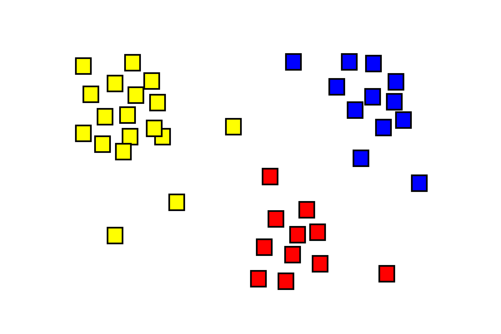

v.4, 24 декабря 2021 года
Машинное обучение (Machine learning), согласно определению этого понятия в Википедии, — это класс методов искусственного интеллекта, характерной чертой которых является не прямое решение задачи, а обучение за счёт применения решений множества сходных задач. Для построения таких методов используются средства математической статистики, численных методов, математического анализа, методов оптимизации, теории вероятностей, теории графов, различные техники работы с данными в цифровой форме.
Популярность термина «машинное обучение» в последние годы провела к тому, что наряду со значительным количеством серьёзных работ «с формулами и теоремами» появилось много различных заметок, авторы которых далеко не всегда сами разбираются в том, что же такое машинное обучение, но пытаются рассказать об этом другим. Зачастую в них говорится о том, что уже через 5-6 лет появятся умные роботы, которые заменят людей в очень многих ситуациях. На самом деле хотя машинное обучение, безусловно, является перспективным направлением Computer Science, ждать от него в ближайшее время «чудес» едва ли стоит.
Одной из простейших задач, относимых сейчас к задачам машинного обучения, является задача нахождения с помощью компьютера регрессии — зависимости какой-то величины от одной или нескольких других величин (факторов, регрессоров, независимых переменных). Простейшими примерами подобных задач являются задачи предсказания «адекватной» цены на автомобили с пробегом или старые мобильные телефоны. Эти цены зависят от целого ряда факторов, и на основе обработки имеющихся данных компьютер может предложить «разумную» цену для конкретного автомобиля или телефона.
Машинное обучение всегда предполагает обработку какого-то набора данных, построения той или иной статистической модели на её основе, и последующего решения конкретной практической задачи. Для реализации указанной стратегии необходимо иметь:
Полезно понимать, что такие разделы Computer Sciense как классическое программирование, Data Science (наука о методах анализа данных) и Data Mining (способ анализа данных, предназначенный для поиска ранее неизвестных закономерностей в больших массивах информации) в основном базируются на двух из вышеуказанных трёх «вещей»: классическое программирование «имеет дело» со свойствами и алгоритмами, Data Science — с данными и свойствами, а Data Mining — с данными и алгоритмами. К этому следует добавить, что само машинное обучение является разделом науки «Искусственный интеллект».
Машинное обучение может быть:
Отдельным разделом машинного обучения можно считать нейросети.
Вот как можно описать ситуации, в которых целесообразно применять тот или иной подход.
Вот как классифицируются различные варианты классического обучения:
В случае обучения с учителем машине сообщается, что является правильным. Например, каждому из набора изображений с различными фруктами сопоставляется название этого фрукта. Это называют разметкой или категоризацией данных. Машина в этом случае учится на конкретных примерах. В обучении без учителя машине предлагается просто набор изображений фруктов и даётся задание самостоятельно разобраться с ними. Такие данные называются не размеченными и машина сама пытается обнаружить какие-либо закономерности в имеющемся наборе данных. Обучение с учителем, конечно же, происходит быстрее. Оно используется чаще.
Классификация (classification) даёт возможность разделить объекты по какому-то заранее определённому признаку. Она может быть использована, например, для:
Вот достаточно часто используемые для решения задачи классификации алгоритмы.
Регрессия (regression) достаточно близка к классификации. Типичным примером задачи на регрессию является следующая: для имеющегося множества точек найти (и изобразить) прямую (или кривую определённого вида) линию, которая наилучшим образом «представляет» заданное множество. Регрессию используют для:
В отличие от классификации регрессия позволяет получить некоторые числовые характеристики интересующего нас объекта. Два основных вида регрессии — это линейная и полиномиальная регрессия.
Кластеризация (clustering) — это разделение всего множества имеющихся объектов на совокупность непересекающихся подмножеств по неизвестному заранее признаку или совокупности признаков:

Кластеризация используется, например, для:
Наиболее известными алгоритмами кластеризации являются:
Данный метод (Dimension Reduction) основан на объединении нескольких признаков в одну абстракцию более высокого уровня. Хороший пример: обладающие треугольными ушами, длинными хвостами и носами собаки — это овчарки. Подобный подход помогает, например, определять тематику какого-либо текста.
Основными алгоритмами являются:
Поиск правил (Association Rule Learning) позволяет, например, выявить закономерности среди множества делаемых заказов. Его применяют для прогноза распродаж, анализа покупаемых вместе друг с другом товаров, анализа поведения пользователей на веб-сайтах, …
На странице Обучение ассоциативным правилам можно получить начальное представление об этом методе машинного обучения.
Наш весьма ограниченный по времени курс не позволяет сколь либо подробно остановиться на этих методах машинного обучения. Вот ссылки на источники информации о них: